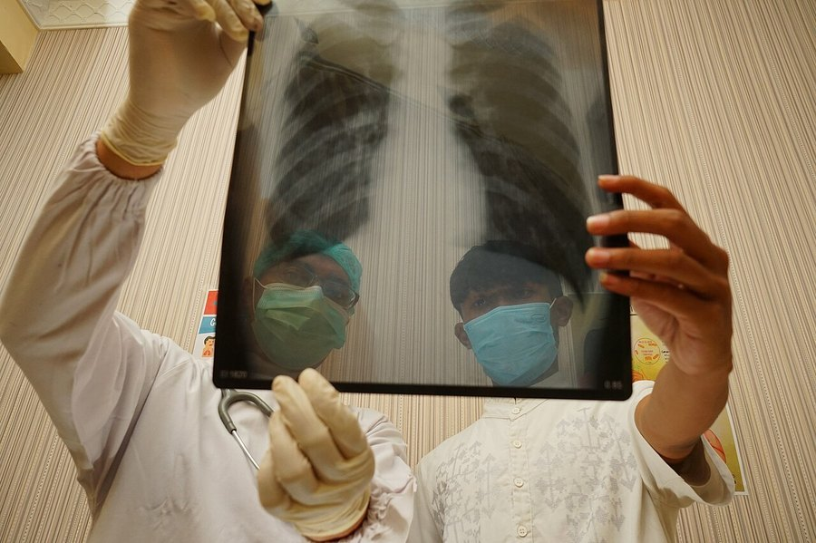

Shingles Vaccine Linked to 24% Lower Dementia Risk in Large Study
A study of more than 500,000 older adults found a meaningfully lower dementia diagnosis rate among those who got the shingles vaccine. Here's what the research actually shows, and where it falls short of proof.

Key takeaways
- A large study of Medicare data found a 24% lower relative rate of dementia diagnosis over four years among older adults who got the shingles vaccine.
- The study population was specific: adults 66 and older with a recent skilled-nursing-facility stay, not a general cross-section of older adults.
- This is observational research, not a randomized trial, so it can't prove the vaccine directly causes the lower rate.
- It echoes earlier findings from studies of an older shingles vaccine, adding to a growing, but still unproven, research thread.
- The shingles vaccine is already recommended for most adults 50 and up regardless of this research, to prevent shingles itself.
Short version: a new analysis of Medicare data found that older adults who received the shingles vaccine were diagnosed with dementia at a notably lower rate than those who didn't, over four years of follow-up. It's a large, carefully designed study, and it adds to a body of similar findings building over the past couple of years. It is not proof that the vaccine prevents dementia, and the researchers themselves frame it that way.
What did the study actually find?
Researchers examined health records for more than 500,000 Medicare beneficiaries age 66 and older who had a recent stay at a skilled-nursing facility, comparing dementia diagnosis rates between those who received the recombinant shingles vaccine and those who didn't. Adults who were vaccinated showed roughly a 24% lower relative rate of a new dementia diagnosis over the following four years. The study, published in the journal Annals of Internal Medicine, used a method called target trial emulation, an approach designed to mimic the structure of a randomized trial as closely as possible using existing health-record data, when running an actual trial isn't practical or ethical.
Who was actually studied, and why does that matter?
This wasn't a study of the general older population. Everyone included had a recent stay at a skilled-nursing facility, typically for short-term rehabilitation or longer-term care, which usually means a higher baseline health burden than the average 66-year-old living independently. That's a meaningful detail. Results in this specific, higher-risk group don't automatically tell us what would happen in healthier older adults who've never needed nursing-facility care, and the size of the effect could look different in a broader population.
COMPLEX
The memory formula we rate highest in 2026
Advanced Memory Complex combines citicoline, bacopa, phosphatidylserine and B-vitamins in a fully transparent, clinically dosed formula, backed by a 60-day guarantee.
See Today's Price →Why might a shingles vaccine affect dementia risk at all?
It sounds like an odd connection at first. The leading hypothesis researchers point to is that the virus behind shingles, the same one that causes chickenpox, can reactivate later in life and may contribute to inflammation or blood vessel changes in and around the brain in some people. Preventing shingles, by that logic, could indirectly reduce one small contributor to cognitive decline over time. That's a plausible biological story, but it remains a hypothesis. This study wasn't designed to prove that specific mechanism, only to measure whether vaccination and dementia diagnosis rates moved together in the data.
What's the catch?
The biggest limitation is one that applies to almost every vaccine-and-health-outcome study built on existing records: people who choose to get vaccinated tend to differ from people who don't, in ways beyond the vaccine itself. They may see doctors more regularly, manage other health conditions more actively, or generally engage more with preventive care, and any of those habits could independently track with a lower dementia diagnosis rate. Target trial emulation is a genuine attempt to reduce that kind of bias by carefully matching comparison groups, but it can't fully replace a randomized trial, where a coin flip, not personal health behavior, decides who gets vaccinated. Until that kind of trial exists, a causal claim stays out of reach.
Does this fit with other research?
Yes. This finding lines up with several earlier studies looking at an older version of the shingles vaccine, which also reported lower dementia rates among vaccinated adults using different data sets and populations. Multiple independent studies pointing in the same direction, using different methods, is a reasonable reason to take the pattern seriously. It still isn't the same as a single, definitive trial settling the question either way.
What this means for you
The shingles vaccine is already recommended by U.S. health authorities for most adults 50 and older, mainly to prevent shingles itself, a painful condition that can lead to lasting nerve pain and other complications. A possible dementia benefit is a reasonable extra data point to bring up at your next doctor's visit, not a reason to make vaccine decisions on its own. If you're weighing brain-health steps more broadly, our pillar guide on how to improve your memory covers the habits with the most consistent evidence, and our piece on dementia prevention tips looks at modifiable risk factors in more depth.
Frequently asked questions
Does the shingles vaccine really lower dementia risk?
A large study found that older adults who got the recombinant shingles vaccine were about 24% less likely to be diagnosed with dementia over four years than those who didn't. That's an association from observational data, not proof the vaccine directly causes the difference.
Who was studied?
The analysis covered more than 500,000 Medicare beneficiaries age 66 and older who had a recent stay at a skilled-nursing facility, using linked claims and health-record data. That's a specific, higher-risk population, not a general cross-section of all older adults.
Why might a shingles vaccine affect dementia risk?
One leading theory is that the shingles virus itself may contribute to brain inflammation or vascular changes in some people, so preventing shingles could indirectly protect the brain. This remains a hypothesis, not a confirmed mechanism.
Should I get the shingles vaccine specifically to protect my memory?
The shingles vaccine is already recommended for most adults 50 and older to prevent shingles itself, a painful and sometimes serious illness. A possible dementia benefit is a reasonable bonus to discuss with your doctor, not yet a proven, primary reason to get vaccinated.
Thinking about brain health more broadly?
Vaccination is one small piece of a much bigger picture. See the memory formulas our editors rate highest for 2026 for the nutrient side of everyday brain support.
See the Top 5 Memory Formulas →Related: Dementia prevention tips · How to improve your memory · Memory loss vs normal aging · Best memory formulas of 2026